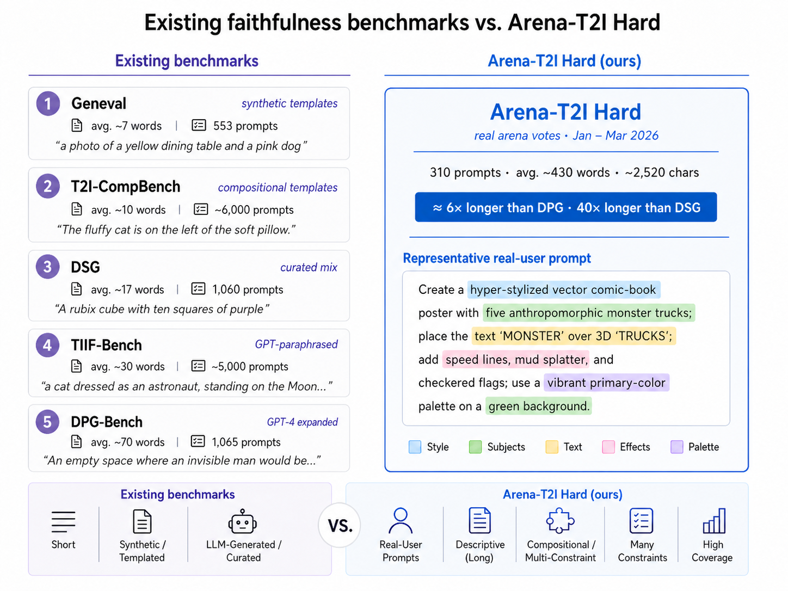
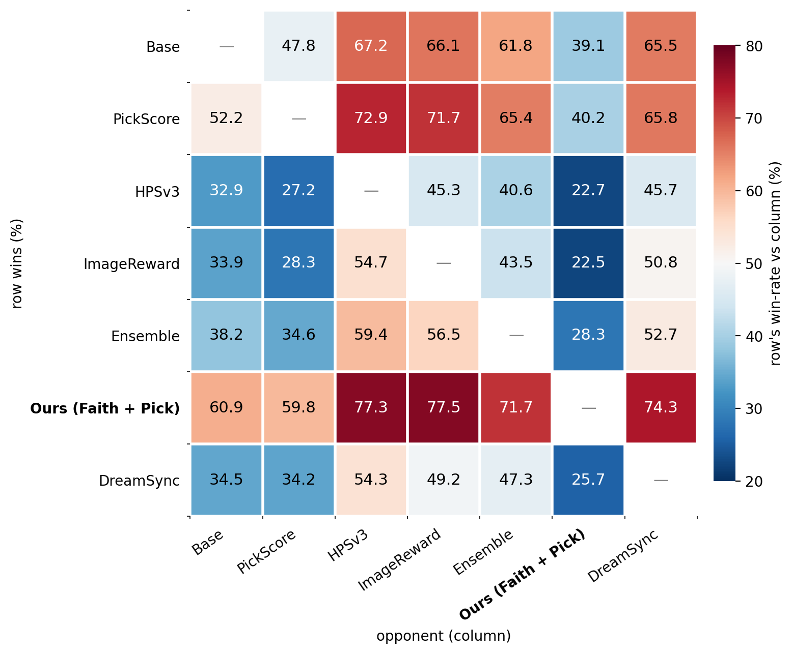

Arena-T2I Hard
Benchmarking and Improving Faithfulness with a Dependency-Aware Checklist
Arena Intelligence & UCLAAbstract
Existing T2I faithfulness benchmarks rely on atomic instructions that top systems already satisfy near-perfectly, so a single binary VLM-judge score no longer reveals which constraints a model fails. We introduce Arena-T2I Hard, a 310-prompt stress benchmark drawn from real arena T2I logs, with ~30 decomposed yes/no constraints per prompt across six categories. The strongest system we evaluate reaches only 0.855, with a 33 pp spread across 11 systems—and high public-arena rankings fail to predict faithfulness, confirming that holistic preference scores reward aesthetics over fine-grained prompt adherence.
The dependency-aware checklist that scores the benchmark also serves as a post-training reward. Combined with a Bradley-Terry aesthetic reward via group-decoupled normalization (GDPO), it improves faithfulness and aesthetics on SD3.5-Medium and FLUX.1-dev, beating every single-reward, naive weighted-sum, and 4-reward-ensemble baseline.
Drawbacks of Current Benchmarks
Existing faithfulness benchmarks rely on synthetic templates, LLM rewriting, or short curated captions — even the longest-form predecessor (DPG-Bench) averages only ~70 words per prompt, and top systems already score over 95% on them. Arena-T2I Hard instead draws from real T2I-arena user votes and selects for compositional difficulty: ~430 words and ~30 decomposed yes/no questions per prompt.

The Benchmark
Arena-T2I Hard
310 prompts sampled from a public T2I arena leaderboard (Jan–Mar 2026)—real user requests, filtered and hand-selected for compositional difficulty and balanced across six visual-style categories.
Leaderboard: 11 frontier closed-source systems
| # | Model | Arena-T2I Hard ↑ | DPG-Bench ↑ | DSG ↑ | Arena rank | Arena score |
|---|---|---|---|---|---|---|
| 1 | gemini-3-pro-image-preview-2k | 0.855 | 0.970 | 0.946 | #3 | 1244±4 |
| 2 | grok-imagine-image-20260306 | 0.849 | 0.965 | 0.934 | #8 | 1170±4 |
| 3 | gpt-image-1.5-high-fidelity | 0.796 | 0.970 | 0.942 | #4 | 1242±4 |
| 4 | recraft-v4 | 0.787 | 0.956 | 0.914 | #29 | 1109±5 |
| 5 | wan2.6-t2i-v2 | 0.768 | 0.954 | 0.917 | #21 | 1132±4 |
| 6 | gemini-2.5-flash-image (nano-banana) | 0.768 | 0.954 | 0.921 | #14 | 1152±3 |
| 7 | gpt-image-1 | 0.722 | 0.959 | 0.938 | #27 | 1115±3 |
| 8 | imagen-4.0-ultra-generate-001 | 0.680 | 0.961 | 0.928 | #17 | 1148±4 |
| 9 | imagen-4.0-generate-001 | 0.659 | 0.947 | 0.913 | #22 | 1130±3 |
| 10 | hunyuan-image-3.0-fal | 0.609 | 0.947 | 0.837 | #15 | 1151±3 |
| 11 | ideogram-v3-quality | 0.523 | 0.894 | 0.855 | #42 | 1049±4 |
How We Score: Dependency-Aware Checklist
A frozen LLM decomposer maps each prompt to a DAG of yes/no questions; a VLM judge answers them in BFS order. If a parent fails, its descendants are scored NO without a further VLM call—avoiding the inflated scores flat checklists produce when an attribute fires on the wrong object. The faithfulness score is the yes-ratio over the questions.
A Benchmark Example
One real Arena-T2I Hard prompt scored against the image from the top-ranked system, gemini-3-pro-image-preview—which still satisfies only 23 of 27 constraints (0.85). The hairbrush and hand mirror aren’t pink (q17, q19 = No), and the shoes are hidden by the gown, so q10 is indeterminate (N/A)—auto-skipping its dependent q11.
- Yesq0. Is there a person in the image?
- Yesq1. Is there a large, throne-like chair in the image?
- Yesq2. Is the person seated on the throne-like chair? · needs q0, q1
- Yesq3. Is the person wearing a gown? · needs q0
- Yesq4. Is the gown pink? · needs q3
- Yesq5. Is the gown full-length? · needs q3
- Yesq6. Does the gown have a fitted, corseted bodice? · needs q3
- Yesq7. Does the gown have a voluminous skirt? · needs q3
- Yesq8. Is the gown adorned with ruffles and layers? · needs q3
- Yesq9. Is the person wearing a tiara or crown? · needs q0
- N/Aq10. Is the person wearing high-heeled shoes? · needs q0
- Skipq11. Are the high-heeled shoes pink? · needs q10
- Yesq12. Is the person wearing jewelry, such as bracelets and rings? · needs q0
- Yesq13. Does the person have elaborate makeup, including bold eyeliner and heavy eyeshadow? · needs q0
- Yesq14. Is the person's hair styled in a voluminous, wavy updo? · needs q0
- Yesq15. Is the throne-like chair pink? · needs q1
- Yesq16. Is there a hairbrush in the image?
- Noq17. Is the hairbrush pink? · needs q16
- Yesq18. Is there a hand mirror in the image?
- Noq19. Is the hand mirror pink? · needs q18
- Yesq20. Is there a fan in the image?
- Yesq21. Is the fan pink? · needs q20
- Yesq22. Are the hairbrush, hand mirror, and fan surrounding the chair? · needs q1, q16, q18, q20
- Yesq23. Is the background dark?
- Yesq24. Is there a floral arrangement in the background?
- Yesq25. Is there a mirror in the background?
- Yesq26. Is there dramatic lighting creating a spotlight effect on the person? · needs q0
Yes constraint satisfied · No violated · N/A judge couldn’t determine (counted as not satisfied) · Skip auto-failed because a parent question failed (no VLM call).
Bonus
The Checklist as a Post-Training Reward
Single rewards don't transfer across axes: Bradley-Terry preference rewards lift aesthetics but drag faithfulness down, and vice-versa. We combine the checklist (faithfulness) with a BT reward (aesthetics) under group-decoupled normalization (GDPO)—standardizing each reward within its rollout group before combining, so neither axis dominates the gradient. On FLUX.1-dev this lifts both at once: +10.5% faithfulness and +3.5% PickScore. Under a pairwise win-rate protocol (MMRB2), our Faith + Pick run is the strongest row on both SD3.5-Medium and FLUX.1-dev, beating every single-reward, naive weighted-sum, and 4-reward-ensemble baseline—and a 1,899-vote human study agrees (64.1% preferred overall).

Pairwise net win-rates on the 1k test set (Gemini-3-flash, MMRB2 rubric)—Faith + Pick GDPO wins every cell of its row.
BibTeX
@article{ban2026arenat2ihard,
title = {Arena-T2I Hard: Benchmarking and Improving Faithfulness
with Dependency-Aware Checklist},
author = {Ban, Yuanhao and Xie, Tong and An, Sohyun and Hong, Yunqi
and Frick, Evan and Hsu, I-Hung and Chiang, Wei-Lin
and Stoica, Ion and Hsieh, Cho-Jui},
year = {2026}
}